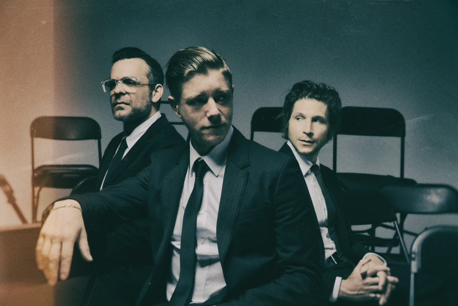

¿Quiénes son?
Interpol es una banda neoyorquina de Indie Rock formada en 1998. La banda se encuentra actualmente formada por Paul Banks (vocalista, guitarra), Daniel Kessler (guitarra) y Sam Fogarino (batería).
Tras dos años de actuaciones por el circuito alternativo de Nueva York y sus alrededores, Paul Banks, Daniel Kessler, Carlos Dengler y Sam Fogarino publicaron el EP Interpol (2000). Un año después, tras asistir al famoso programa inglés de la BBC de John Peel, despegan definitivamente, firmando con el sello Matador.
Biografía
Su historia comienza en 1997, cuando Greg Drudy y Daniel Kessler se conocieron en la Universidad de Nueva York, incorporándose después Carlos Dengler. Cuando necesitaron un vocalista, recurrieron a un viejo amigo británico que Kessler había conocido en París, Paul Banks. En 2000 Greg Drudy dejó la banda, y Kessler lo sustituyó por Sam Fogarino, a quien conoció en una tienda de discos local. Al final la banda quedó compuesta por Paul Banks (vocalista, guitarra, letras), Daniel Kessler (guitarra, segundas voces), Carlos Dengler (bajo y piano) y Sam Fogarino (batería).
Tras dos años de actuaciones por el circuito alternativo de Nueva York y sus alrededores, publicaron el EP Interpol (2000), con la compañía Fukd, firma underground de la Chemikal.
En su primer álbum "Turn on the Bright Lights", que apareció en 2002, tuvieron un sonido oscuro e hipnótico. Grabado en los estudios Tarquin en Bridgeport, Connecticut, el disco vendió una cantidad de copias récord para una producción independiente. Realizaron una larga gira para promocionarlo por Estados Unidos y apariciones en varios programas de televisión, recibiendo un buen trato por parte de la prensa y entusiasmo por parte del público.
Mis Canciones Favoritas
Sonido e influencias
La crítica musical los ha etiquetado como retro-rock o revival rock. Interpol tiene un estilo de rock oscuro, de raíces claramente ochenteras, que recuerda el post punk de los ingleses Joy Division (aunque han desmentido tenerlos en cuenta como influencia) y Bauhaus. También se acercan a la vertiente más sucia del rock independiente estadounidense de Sonic Youth, Dinosaur Jr y por parte del cantante Paul Banks, de Nirvana. También podemos señalar la influencia de los Pixies en los neoyorkinos, principalmente en la manera de afrontar la creación musical. Con el paso de los años la banda se ha convertido en una de las pioneras y más influyentes bandas del Post Punk Revival.
Discografía
- Turn on the Bright Lights (2002)
- Antics (2004)
- Our Love to Admire (2007)
- Interpol (2010)
- El Pintor (2014)
- Marauder (2018)